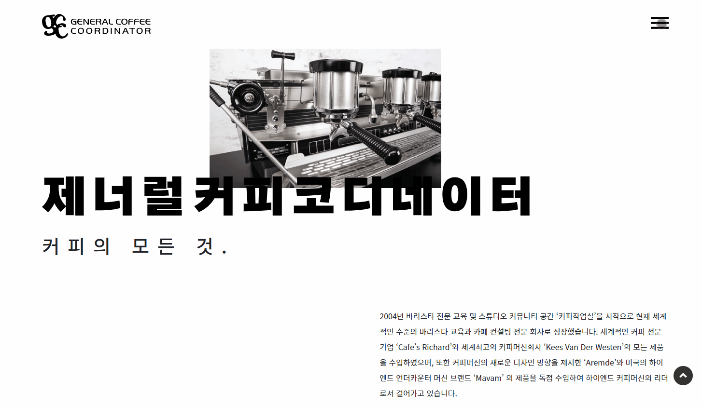
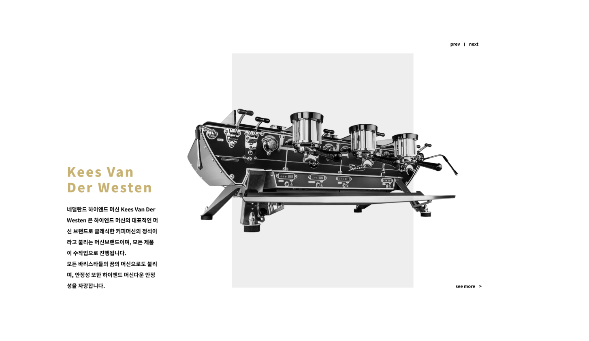
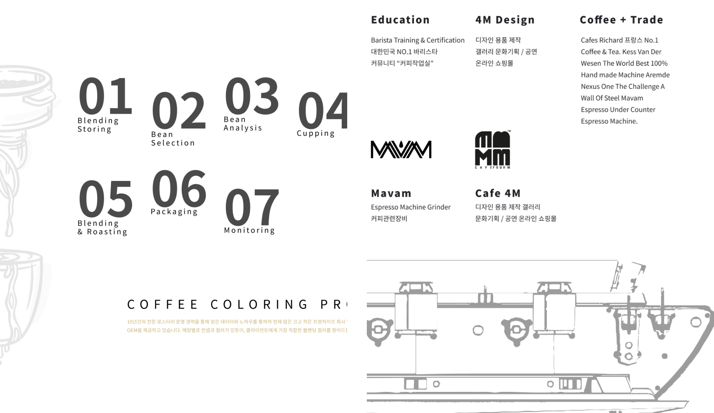

<!DOCTYPE html>
<html>
    <head>
        <meta charset="utf-8" />
        <meta name="viewport" content="width=device-width, initial-scale=1">
        <title>GCC Group</title>
        <link rel="stylesheet" type="text/css" href="../css/styles.css">
        <link rel="preconnect" href="https://fonts.googleapis.com">
        <link rel="preconnect" href="https://fonts.googleapis.com">
        <link rel="preconnect" href="https://fonts.gstatic.com" crossorigin>
        <link href="https://fonts.googleapis.com/css2?family=Courier+Prime:ital,wght@0,400;0,700;1,400;1,700&family=Montserrat:ital,wght@0,100..900;1,100..900&display=swap" rel="stylesheet">
        <link rel="icon" type="image/png" href="../dy_favicon.png">
    </head>
</html>
<body>
    <div class="mode-toggle">
        <button id="darkModeToggle">
            
        </button>
    </div>
    <header>
        <div class="language-selector">
            <a href="../sub_gcc_kr.html">KR</a>
            <div class="lang-divider"></div>
            <a href="#" class="active">EN</a>
            <div class="lang-divider"></div>
            <a href="../cn/sub_gcc_cn.html">CN</a>
        </div>
    </header>
    <div class="sub-contents">
        <a href="index_en.html">&lt; Back to Home</a>
        
        <div class="sub-contents-text">
            <div class="sub-text-title">Overview</div>
            <div class="sub-text-p">
                GCC (General Coffee Coordinator) is a company involved in all aspects of coffee manufacturing, design, and business operations. It currently operates the brand Café4M, which has multiple franchise locations. Since its inception in 2004 with the launch of the barista training and studio community space 'Coffee Workroom,' GCC has grown into a global leader in barista education and café consulting.
                <br/><br/>
                ZiPIDA was commissioned to work on a project for GCC, and I collaborated with one of their in-house designers. I was responsible for branding, layout, and web design. The client wanted a sophisticated and simple style for their website, based on the company's image. To achieve this, we chose three main colors: black, white, and gold. Keywords in each section were highlighted with font size and gold color to create emphasis.
                <br/><br/>
                Additionally, interactive elements such as animations for menus and top buttons were incorporated to ensure the website was not overly monotonous. The website was designed to be responsive, allowing it to be viewed on tablets and mobile devices.
                <br/><br/>
                However, starting in 2024, the website has undergone changes and is no longer available online. The Figma link to the design is provided below.
            </div>
        </div>        
        
        
        
        
        <div class="sub-contents-text">
            <div class="sub-text-title">Link</div>
            <div class="sub-text-p">
                <a href="https://www.figma.com/design/xBD2dr2IeLAGPgGg58hyhp/GCC-Homepage-(Portfolio)-(Copy)?node-id=1-3580&t=yJh3pUjvuoxccjBw-1">https://www.figma.com/design/xBD2dr2IeLAGPgGg58hyhp/GCC-Homepage-(Portfolio)-(Copy)?node-id=1-3580&t=yJh3pUjvuoxccjBw-1</a>
            </div>
        </div>

    </div>
    <footer>
        <p>&copy; 2025 Dayeong Kim. All rights reserved.</p>
    </footer>

    <script src="../js/scripts.js"></script>
</body>